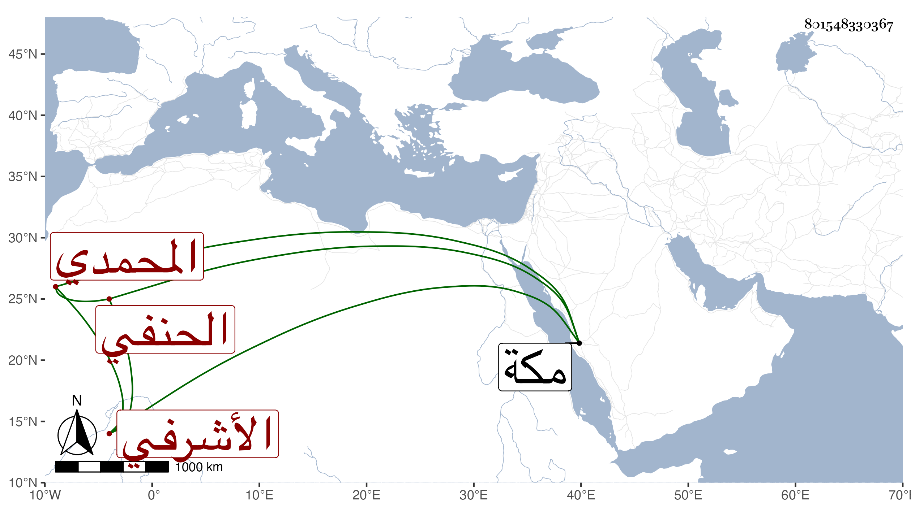

0902Sakhawi.DawLamic.ITO20230111-ara1.EIS1600.801548330367
Biography ID: 801548330367
511
محمد بن جرباش محب الدين المحمدي الأشرفي الحنفي . ممن اشتغل في الفقه وغيره على خير الدين أبي الخير بن الرومي الفراء ووصفه بالفضل وكذا أخذ عن نظام ولازم الديمي في شرح الألفية للعراقي وغيرها وقرأ على شرحي عليها بكماله مع شرح معاني الآثار للطحاوي وغيرهما ، وطلب قليلا وقرأ على البدر الدميري مسند الشافعي وغيره وعينه في وصيته لقراءة بعض الكتب وكذا قرأ على السنباطي وسمع على أبي الحسن على حفيد يوسف العجمي وآخرين ، وحج في موسم سنة اثنتين وتسعين وجاور التي بعدها ، ولازمني حتى أكمل شرحي المشار إليه وقرأ اليسير من سنن البيهقي وكتب من تصانيفي أشياء ومدحني بقصيدة وغيرها وكذا قرأ على المحب الطبري الإمام وغيره رواية بل أقرأ هناك بعض المبتدئين في الفقه وأصوله والعقائد وغير ذلك ولم يختلط بكبير أحد هناك مع قوة النفس في المباحثة وخروج عن السنن حتى قل أن يتزحزح وربما توقف على المنقول فلا يرجع ويذكر عنه في ذلك ما لا أحبه له ، وسافر من مكة لجدة ليحصل هديته شراء وعاد مع الركب واستنزل المظفري محمود الأمشاطي عن تدريس الفقه بالظاهرية القديمة ، وكان بينه وبين بدر الدين العلائي أحد جماعة الدرس ما تحاكاه الطلبة .
